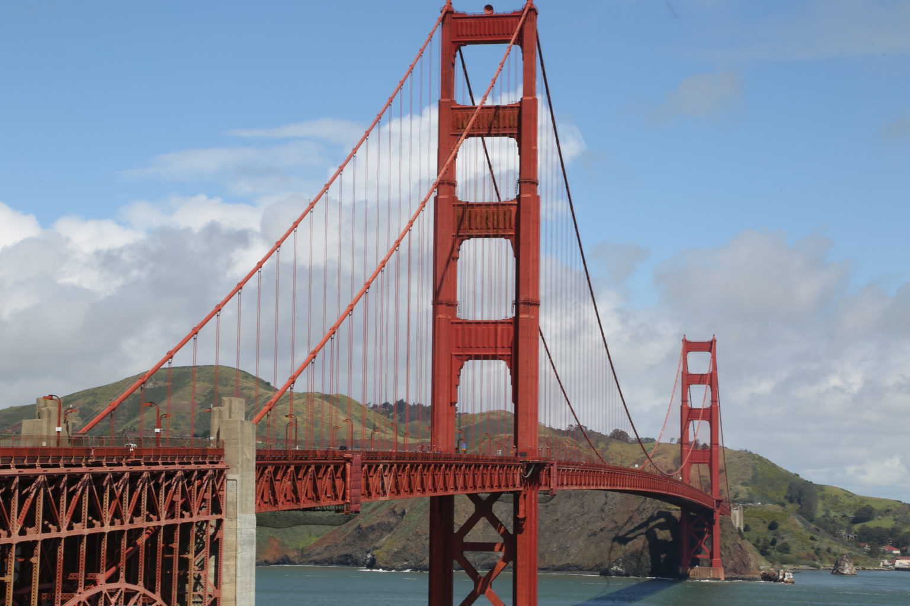

Reading #2
Q1. What are the similarities and differences regarding the work of Walter De Maria and Banksy?
The similarities of Walter De Maria and Banksy is that both artist make public natural environment to display their artwork to the public. De Maria interested in internal reactions from people who experience his art from the feeling of transcendence or introspection. De Maria also Walter De Maria uses more natural setting such as some place outdoors or in the wilderness. Banksy is more ironic and plays on social commentary. Banksy work on the streets in a public environment but in a more secret manner.
Q2. What are some of the common creative tactics that all the 'sign art' shares? What must signs have to remain relevant?
Sign art share numerious and varies of art ranging from humorous, attention grabbing, comedic, offensive, or creative. Depending on the viewers, some topics such as religion is a sensitive thus might enrage a person just by looking at the sign art.
Q3. What Kind of art, not shown here, that have you seen that was made in response to its location, its environment, a specific event or situation. Please elaborate, provide images if possible.
I do like the Golden Gate bridge in SF because of its particular color and engineering feat that it overcome during that era. Its not just an object but serve as a functional object to everyday lives and now its an international landmark.
